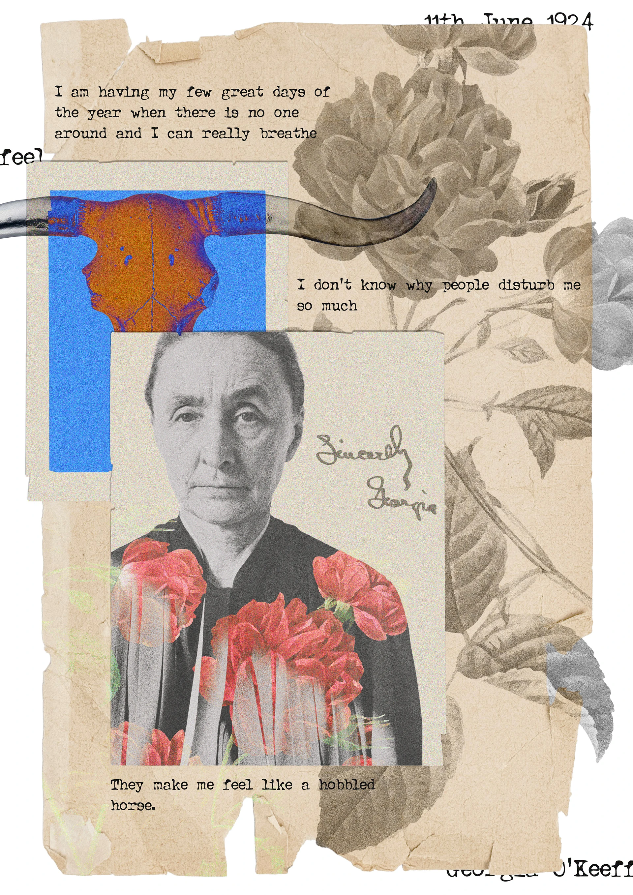
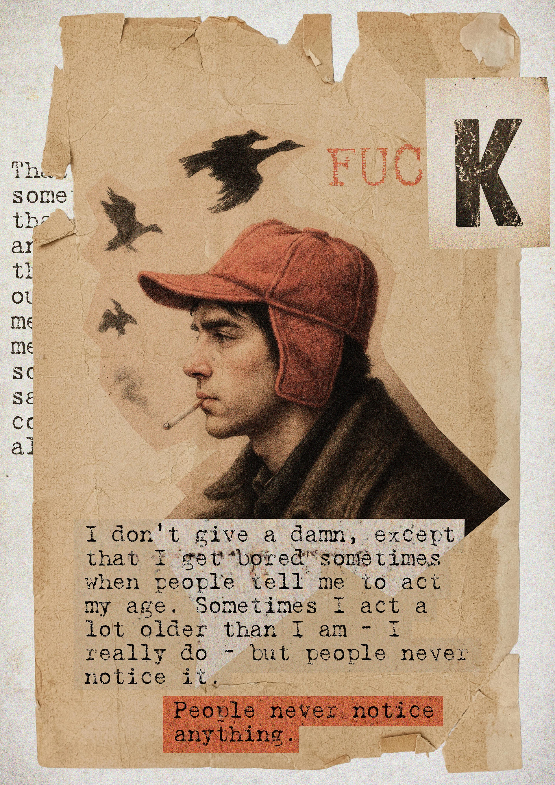
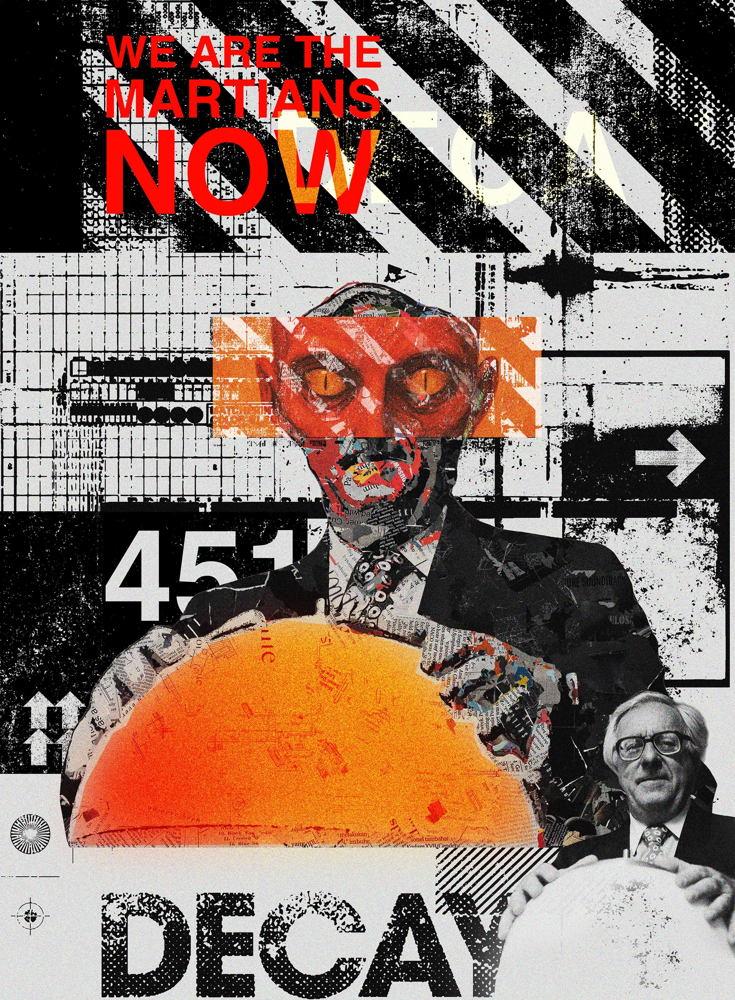
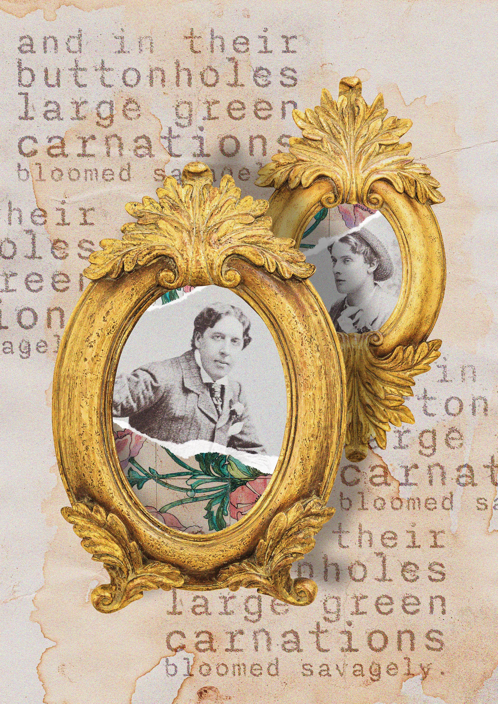
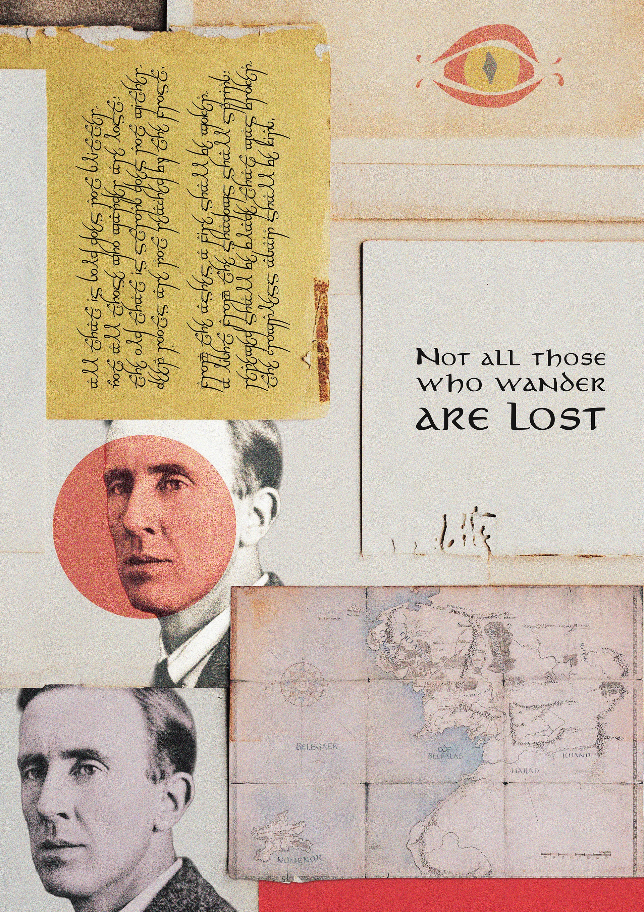
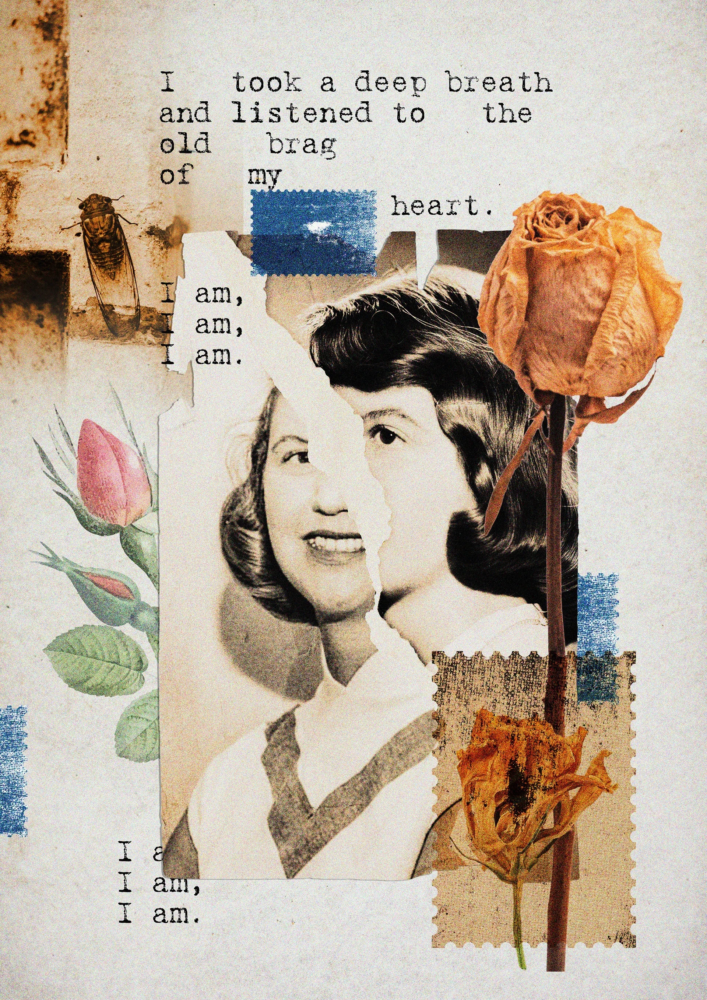
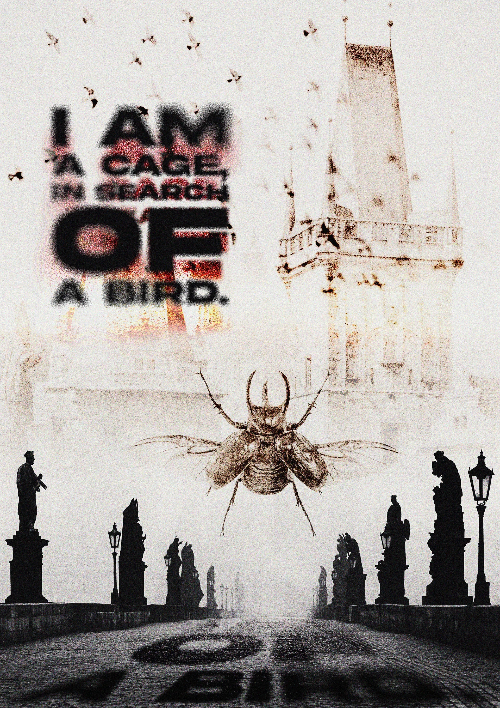
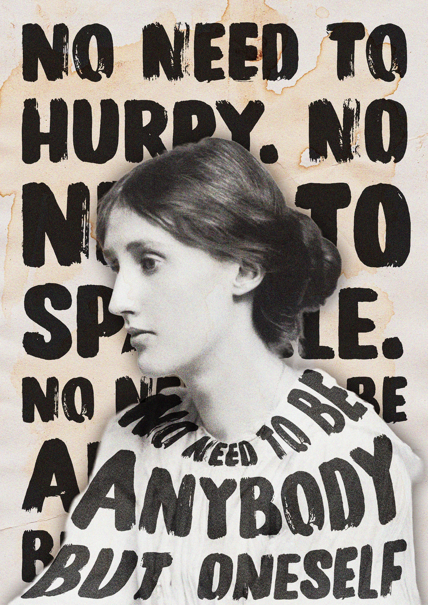
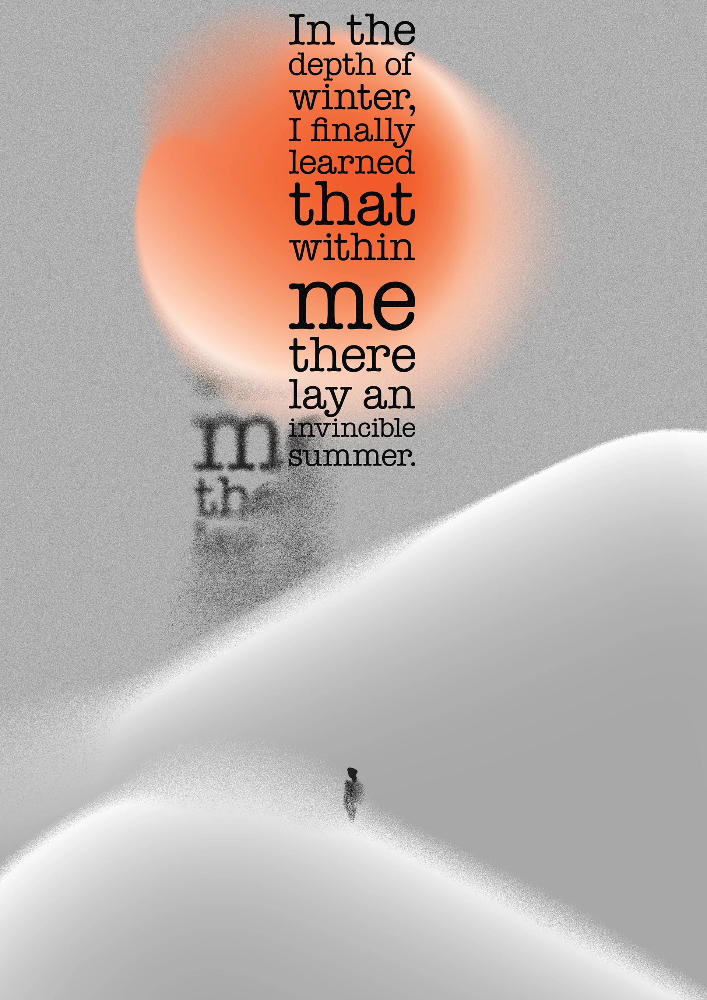

POSTERS: A Visual Anthology of Art & Literature
A series of digital collages that translate the internal monologues and enduring legacies of history's most profound creative minds into a modern, textured aesthetic.
By blending high-grain archival photography, distorted typography, and symbolic motifs, each poster serves as a "visual snapshot" of a specific creator's psyche - exploring the tension between solitude and public persona.
Typography
Ranging from clean, bold sans-serifs to rhythmic, typewriter-style repetitions that mirror the pacing of the written word.
Composition
Asymmetrical layouts that mimic the feeling of a private scrapbook or a city wall covered in wheat-pasted posters.
Texture & Grain
Heavy use of scanned paper, ink bleeds, and digital grit to create a tactile, physical feel in a digital medium.
The Collection
Frida Kahlo
A vibrant, punk-inspired tribute celebrating resilience and the "dreamer" spirit through high-saturation accents and layered collage.
Georgia O'Keeffe
A study on desert solitude and the "breath" of creative isolation, featuring sun-bleached skulls and blooming florals.
Holden Caulfield
Capturing the cynical, restless spirit of The Catcher in the Rye with muted tones and repetitive, "bored" typography.
Ray Bradbury
A dystopian exploration of societal decay and the "Martian" perspective, using sharp geometric lines and solar motifs.
Oscar Wilde
A lush tribute to aestheticism and secret identities, framed by gilded ornaments and the iconic "green carnation."
Sylvia Plath
A sharp juxtaposition of botanical elements and rhythmic, typewriter-style text capturing the "brag" of the heart.
J.R.R. Tolkien
A journey through cartography and the beauty of wandering, featuring Elvish-inspired scripts and topographic maps.
Virginia Woolf
Minimalist, heavy-handed typography that wraps around the subject to emphasize the necessity of self-identity.
Franz Kafka
A haunting, ethereal composition using motion blur and silhouettes to evoke the existential search for a "bird."
Albert Camus
A minimalist representation of the "invincible summer" found within the bleakest winters of the human condition.









